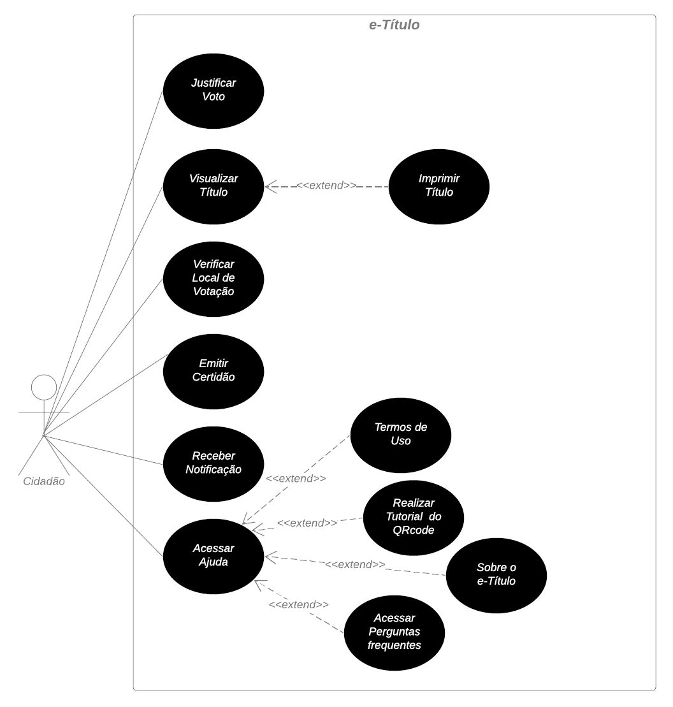

Casos de Uso
Introdução
Casos de uso é uma técnica de modelagem de requisitos que descreve as interações entre um sistema e seus atores (usuários, sistemas externos, etc.). Eles ajudam a identificar e documentar as funcionalidades do sistema a partir de uma perspectiva de alto nível. Cada caso de uso descreve um cenário de interação entre o sistema e um ator, representando o que o sistema faz em resposta a ações do ator. Os diagramas de casos de uso são usados para visualizar esses casos de uso e suas relações, fornecendo uma visão geral do sistema e facilitando a comunicação entre os stakeholders. Em resumo, os casos de uso são uma ferramenta eficaz para capturar e comunicar os requisitos funcionais de um sistema de software.
Cabe ressaltar que, em um diagrama de caso de uso, "includes" e "extends" são relações que modelam interdependências entre casos de uso. "Includes" denota uma inclusão de funcionalidade, indicando que o caso de uso base sempre envolve a execução do caso de uso incluído. Por outro lado, "extends" representa uma extensão opcional, permitindo que o caso de uso base seja ampliado pelo caso de uso extensor para acomodar cenários adicionais. Esses relacionamentos são fundamentais para representar de maneira clara as dinâmicas e interações entre os diversos casos de uso em um sistema.
Metodologia e objetivo
Como já exposto no tópico de Conceito, um diagrama de caso de uso é uma representação visual que resume as interações entre os usuários(atores) e o sistema, destacando suas funcionalidades e o seu comportamento. Ele é composto por atores, que representam os usuários, e casos de uso, que descrevem as ações realizadas pelos usuários e as respostas do sistema. Para criar um caso de uso, frequentemente se utiliza uma persona, como o Diego Carvalho, para melhor compreender as necessidades e desejos dos usuários finais do sistema. Ao incorporar a persona Diego Carvalho, criada previamente e disponível na documentação de Personas, em um diagrama de caso de uso, é possível modelar cenários realistas de uso do sistema que levam em consideração as diferentes necessidades e objetivos do tipo de usuário que ela representa. Agora, voltando ao tópico sobre os elementos do diagrama de caso de uso, eles podem ser encontrados na Tabela 1.
Diagrama de Casos de Uso
A figura 1 representa o diagrama de casos de uso do e-Título.
|  |
|---|
Figura 1: Diagrama de Casos de Uso do e-Título.
Fonte: Mateus Orlando, 2023
Legenda
Tabela 1: Legenda do Diagrama de Casos de Uso
| Nome | Função | Elemento |
|---|---|---|
| Ator | Representam os diferentes tipos de usuários externos que interagem com o sistema | |
| Sistema (Retângulo) | Usado para representar o sistema ou o bloco em análise. Ele envolve os casos de uso e atores relacionados |  |
| Casos de Uso (Elipse) | É usada para representar os casos de uso no diagrama. Um caso de uso descreve uma funcionalidade ou uma ação específica que o sistema pode realizar em resposta às interações dos atores. A elipse contém o nome do caso de uso |  |
| Relações (Setas) | As flechas são usadas para representar as relações ou interações entre atores e casos de uso |  |
Fonte: Mateus Orlando, 2023
Casos de Uso
A seguir, as tabelas de 2 a 7 mostram as especificações dos casos de uso.
Tabela 2: Justificar Voto
| UC01 | Informações |
|---|---|
| Descrição | O cidadão é capaz de justificar o seu voto. |
| Ator | Cidadão |
| Pré-condições |
|
| Ação | O cidadão justifica seu voto. |
| Fluxo principal |
|
| Fluxo alternativo |
|
| Fluxo de exceção | - |
| Pós-condições | O cidadão tem a sua abstenção justificada. |
| Data de Criação | 23/10/2023 |
| Rastreabilidade | INT19 |
Fonte: Mateus Orlando, 2023
Tabela 3: Visualizar Título
| UC02 | Informações |
|---|---|
| Descrição | O cidadão é capaz de vizualizar o seu título de eleitor. |
| Ator | Cidadão |
| Pré-condições |
|
| Ação | O cidadão visualiza o seu título de eleitor. |
| Fluxo principal |
|
| Fluxo alternativo 1 |
|
| Fluxo alternativo 2 |
|
| Fluxo alternativo 3 |
|
| Fluxo de exceção |
|
| Pós-condições | O cidadão tem seu título emitido e pode visualizá-lo através do e-Título. |
| Data de Criação | 23/10/2023 |
| Rastreabilidade | INT5 |
Fonte: Mateus Orlando, 2023
Tabela 4: Verificar Local de Votação
| UC03 | Informações |
|---|---|
| Descrição | O cidadão é capaz de visualizar o seu local de votação. |
| Ator | Cidadão |
| Pré-condições |
|
| Ação | O usuário visualiza o local onde irá votar. |
| Fluxo principal |
|
| Fluxo alternativo | Não possui. |
| Fluxo de exceção |
|
| Pós-condições | O cidadão sabe onde é o seu local para voto. |
| Data de Criação | 23/10/2023 |
| Rastreabilidade | BS5 |
Fonte: Mateus Orlando, 2023
Tabela 5: Emitir Certidão de Quitação Eleitoral
| UC04 | Informações |
|---|---|
| Descrição | Usuário é capaz de emitir certidão de quitação. |
| Ator | Cidadão |
| Pré-condições |
|
| Ação | O usuário emite sua certidão de quitação eleitoral. |
| Fluxo principal |
|
| Fluxo alternativo 1 |
|
| Fluxo alternativo 2 |
|
| Fluxo de exceção | - |
| Pós-condições | O cidadão tem sua certidão de quitação emitida. |
| Data de Criação | 21/10/2023 |
| Rastreabilidade | ENT4 |
Fonte: Mateus Orlando, 2023
Tabela 6: Receber Notificação
| UC05 | Informações |
|---|---|
| Descrição | Usuário é capaz de receber notificações acerca das eleições. |
| Ator | Cidadão |
| Pré-condições |
|
| Ação | O usuário recebe notificação. |
| Fluxo principal |
|
| Fluxo alternativo | Não há. |
| Fluxo de exceção | - |
| Pós-condições | O é informado acerca de informações ligadas às eleições. |
| Data de Criação | 22/10/2023 |
| Rastreabilidade | BS6 |
Fonte: Mateus Orlando, 2023
Tabela 7: Acessar Ajuda
| UC06 | Informações |
|---|---|
| Descrição | O cidadão é capaz de sanar dúvidas através de 4 opções: Termos de uso, Perguntas frequentes, Tutorial do QRcode e Sobre o e-Título |
| Ator | Cidadão |
| Pré-condições |
|
| Ação | O cidadão sana suas dúvidas |
| Fluxo principal |
|
| Fluxo alternativo 1 |
|
| Fluxo alternativo 2 |
|
| Fluxo alternativo 3 |
|
| Fluxo alternativo 4 |
|
| Fluxo de exceção | - |
| Pós-condições | O usuário terá suas dúvidas sanadas. |
| Data de Criação | 20/05/2023 |
| Rastreabilidade | INT19, BS12, ENTNF1, ENT5, BS4, BS7 |
Fonte: Mateus Orlando, 2023
Bibliografia
Lucidchart. Diagrama de Caso de Uso UML. Disponível em: <https://www.lucidchart.com/pages/pt/diagrama-de-caso-de-uso-uml>. Acesso em: 18 out. 2023.
BARBOSA, S. D. J.; SILVA, B. S. Interação Humano-Computador. Rio de Janeiro: Elsevier, 2011.
FERNANDO, Sidney. Caso de Uso. Repositório da disciplina de Requisitos de Software da Universidade de Brasília, 2023. Disponível em: https://requisitos-de-software.github.io/2023.1-BilheteriaDigital/modelagem/useCase/. Acesso em: 18 out. 2023.
ALVISSUS, Giovanni. Caso de uso. Repositório da disciplina de Requisitos de Software da Universidade de Brasília, 2022. Disponível em: https://requisitos-de-software.github.io/2023.1-VLC/#/modelagem/casos_de_uso. Acesso em: 20 out. 2023.
Histórico de Versões
| Versão | Data | Descrição | Autor(es) | Revisor(es) |
|---|---|---|---|---|
| 1.0 | 18/10/2023 | Criação da página. | Mateus Orlando | Esther Sena e Mariiana Siqueira |
| 1.1 | 21/10/2023 | Hospedagem do Diagrama de Casos de Uso e da legenda. | Mateus Orlando | Esther Sena e Mariiana Siqueira |
| 1.2 | 23/10/2023 | Início das especificações dos casos de Uso. | Mateus Orlando | Esther Sena e Mariiana Siqueira |
| 1.3 | 23/10/2023 | Finalizando as especificações dos casos de Uso. | Mateus Orlando | Esther Sena e Mariiana Siqueira |
| 1.4 | 28/11/2023 | Correção dos erros apontados na etapa de verificação do grupo 4(e-Título). | Mateus Orlando | -- |